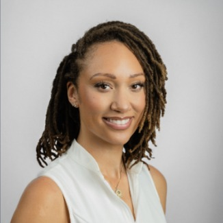

About
A good job is getting harder to reach
The Good Jobs Index tracks a single, stubborn question: can you still reach the
middle class in America, and does the answer depend on a degree you may not have, or on
race and gender you can't change?
Drawing on Current Population Survey data going back to 1976, the Good Jobs Index maps
which jobs pay enough to land a worker in the middle class, which of those are open to
people without a college degree, and who actually holds them. The headline finding is
stark: fewer than 1 in 100 workers hold a job that is both good and
reachable without a degree, and for Black workers that share is smaller still.
Reporters, students, and anyone weighing their own options can use this index to answer
real questions about work, education, and opportunity.
Data update
The Census Bureau released its latest Current Population Survey data on
September 15, 2026. The Good Jobs Index has not been updated with it yet, and we're
holding ourselves to it. This is how long the new numbers have been waiting on us:
Who's behind it

Dr. Jasmine D. Hill
Dr. Jasmine Hill is an Assistant Professor of Public Policy and Sociology at the
University of California, Los Angeles, with a courtesy affiliation to the Labor
Studies department. She received her Ph.D in Sociology from Stanford University,
where she was trained in qualitative, quantitative, and experimental methodology.
Her research and teaching explore racial inequality in the labor market and the
material, cultural, and spatial underpinnings of modern stratification. Her
scholarly contributions have been recognized by the Russell Sage Foundation, the
Washington Center for Equitable Growth, and the Stanford Center for the Comparative
Study of Race & Ethnicity. Her scholarship on racial justice, public policy, and
the workplace has appeared in top-ranked academic journals such as Social Problems,
The DuBois Review, and Teaching Sociology, and in 2017, she co-edited
Inequality in the 21st Century with David Grusky (Westview Press). Her
forthcoming book manuscript with the University of California Press explores modern
Black unemployment, taking evidence from the experiences of Black job seekers in
Inglewood, California.
jasmine-hill.com
Chinyere J. Nwonye
Chinyere Nwonye is a policy analyst for the Black Policy Project at the UCLA Ralph
J. Bunche Center for African American Studies, with a background in mixed-methods
research, policy analysis, and community engagement. Her previous research has
included studying public sentiment on reparations for the California Reparations
Task Force, LA residents' perceptions of community safety for the Los Angeles
Mayor's Office, and labor market trends among Black Californians for the California
Legislative Black Caucus. She completed her Master's of Public Policy with a
concentration in economic development and certificates in global public affairs and
environmental sustainability from the UCLA Luskin School of Public Affairs, earning
capstone honors and departmental student of the year. In fall 2026, she began a
Ph.D in Industrial and Labor Relations at Cornell University, studying the
intersection of automation and the just transition in the labor market.
Dashboard development by Ann Pregler:
www.annpregler.com
← Back to the dashboard